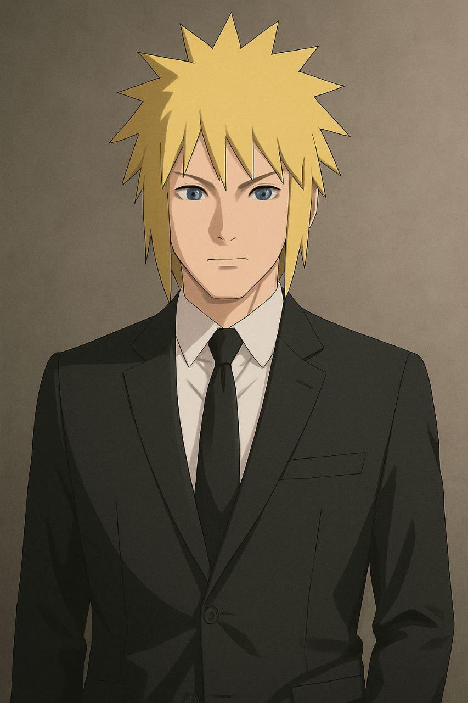

Minato Namikaze
Basic Web Developer
-
From HCMC - XXXXXX
-
01/01/0101
-
AAAA University
- The Battle Legacy of the Fourth Hokage
- The Yellow Flash of the Leaf
- Sealing Jutsu Expert
- Tactical Genius
- Speed + Precision
INTRO
Minato Namikaze — The Yellow Flash of the Leaf
Minato Namikaze was a legendary shinobi from Konohagakure, best known as the Fourth Hokage and the father of
Naruto Uzumaki. Renowned for his incredible speed and mastery of the Flying Thunder God Technique (Hiraishin
no Jutsu), Minato earned the nickname "Konoha’s Yellow Flash" for his lightning-fast teleportation in
battle.
A genius from a young age, Minato graduated from the Ninja Academy with top honors and quickly rose through
the ranks with unmatched skill and a calm, strategic mind. He was the creator of the Rasengan, a powerful
spinning chakra technique later mastered by his son, Naruto.
Despite his calm demeanor, Minato was fearless in battle, and his leadership during the Third Great Ninja
War turned the tide in Konoha’s favor. His most heroic moment came when he sacrificed his life to save the
village from the Nine-Tails attack, sealing the beast into his newborn son—an act that defined Naruto’s
fate.
EXPRIENCE
1. Third Great Ninja War
Shinobi World War III
- Main Role: Jonin commander for Konoha.
- Reputation: His use of the Flying Thunder God Technique allowed him to teleport and
eliminate
enemy
forces in seconds, earning him the fearsome title "Yellow Flash of the Leaf."
- Impact: Villages like Iwagakure gave standing orders to flee on sight if they
encountered
Minato.
That level of fear speaks volumes about his threat level.
- Notable Feat: Single-handedly defeated an entire platoon of Hidden Stone ninja using
speed and
precision.
Minato’s Battle Strengths:
Teleportation Mastery: Flying Thunder God Technique (faster than even most Sharingan
users can
react).
Sealing Jutsu Expert: Including the Reaper Death Seal and Eight Trigrams Sealing Style.
Tactical Genius: Calm, analytical, and almost never wastes movement or chakra.
Speed + Precision: Deadly in one-on-one or large-scale battles.
PROJECT
Creation and Use of the Rasengan * Rasengan – His Greatest Jutsu Project*
- Minato created the Rasengan, a powerful A-rank jutsu using chakra control alone (no hand
signs).
- Though he never got to combine it with his nature transformation, the technique became a
cornerstone of Naruto's arsenal later.
- Minato’s most well-known personal jutsu.
- Inspired by the Tailed Beast Bomb, he aimed to create a powerful technique without hand
signs, fueled by chakra control alone.
- Though unfinished in his lifetime (he couldn't combine it with his nature transformation),
it became the foundation for:
- Naruto’s Rasengan variants (e.g., Rasenshuriken)
- Boruto’s modifications
- Legacy: Taught to Jiraiya → Naruto → Konohamaru → Boruto — passed down as a family heirloom.
Sealing Techniques – Protecting the Future
- Minato mastered and developed powerful fūinjutsu (sealing jutsu):
- Eight Trigrams Sealing Style – Used to seal half of Kurama into Naruto.
- Dead Demon Consuming Seal – Sacrificed himself to seal the other half of Kurama into
himself.
- His seal designs were precise and long-lasting, protecting Naruto until he was strong enough
to control Kurama.
Flying Thunder God Network (Battlefield Domination)
- Expanded Tobirama Senju’s technique into a high-speed teleportation system.
- Could tag kunai, people, and battle zones with his mark.
- Enabled him to move across battlefields instantly, saving comrades and destroying enemy
platoons.
- This tactic became a strategic war advantage during the Third Great Ninja War.
His True Project: Naruto
- Minato’s biggest “project” wasn’t a jutsu—it was his hope for the future: Naruto.
- Believed Naruto would grow strong by facing hardship and eventually be the one to bring
peace.li>
- Sealed Kurama in Naruto not as a punishment, but as a gift and responsibility.
- Left behind scrolls, chakra fragments, and protective seals to guide his son even after
death.